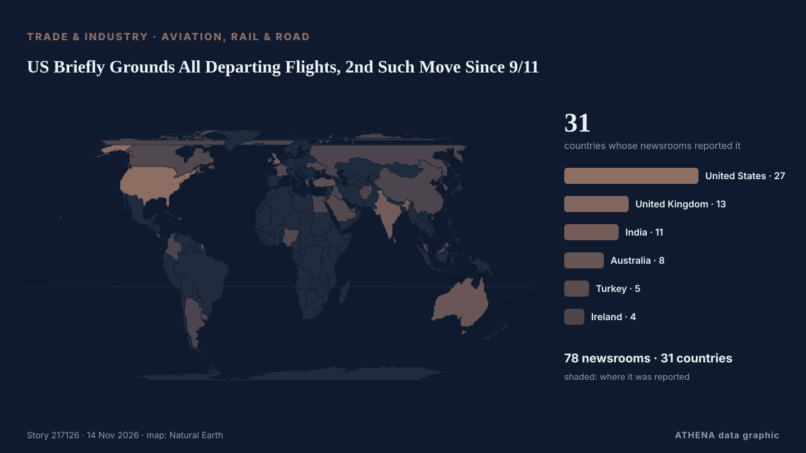

US Briefly Grounds All Departing Flights, 2nd Such Move Since 9/11

The nationwide ground stop was the first since January 2023, when a key FAA computer system malfunctioned, and the second since the aftermath of the September 11, 2001, attacks. από NDTV
Αναφέρθηκε ανεξάρτητα από 78 μέσα σε 31 χώρες από τις 13 Νοε, πρώτο το to vima· η κάλυψη εξασθενεί. Το ATHENA εκτιμά τον κίνδυνο αυξημένο (4.5/10), κυρίως λόγω της σοβαρότητάς του και της εμβέλειάς του — από 0.0 πριν από 24 ώρες. Βεβαιότητα 90% (υψηλή): το επιβεβαιώνουν 78 ανεξάρτητα μέσα, μέση αξιοπιστία 72%. Μέσα ανά χώρα: Ηνωμένες Πολιτείες (12), Ιρλανδία (4), Ινδία (3). Κάλυψη: 13 Νοε έως 13 Νοε, 1 ώρες.
Γιατί έχει σημασία: Οι διαταραχές στο εμπόριο, τη βιομηχανία ή τις υποδομές διαδίδονται στις αλυσίδες εφοδιασμού και αλλάζουν κόστη και χρόνους παράδοσης μακριά.
Τι άλλαξε: 102 νέες αναφορές από 78 μέσα στο 24ωρο έως 14 Νοε.
Πρώτη διατύπωση: Flights halted at US airports amid air traffic control communications problems
Οι τίτλοι των ειδήσεων παρουσιάζονται στα αγγλικά, όπως δημοσιεύτηκαν.
Πώς να διαβάσετε αυτή τη σελίδα
- Τι διαβάζετε
- 78 μέσα σε 31 χώρες ανέφεραν αυτό το γεγονός. Οι αναφορές παρακάτω εμφανίζονται με τη σειρά που δημοσιεύτηκαν· κάθε τίτλος ανοίγει το αρχικό άρθρο. Το ATHENA δεν γράφει δικά του ρεπορτάζ.
- Η εκτίμησή μας
- Για την καταγραφή — Οι αναφορές περιγράφουν ένα ολοκληρωμένο, εσωτερικό, εμπορικό ή προσωπικό ζήτημα. Το καταγράφουμε ώστε να βλέπετε ποιος το ανέφερε και πότε. Δεν παρακολουθούμε εδώ κίνδυνο ευρύτερης σύγκρουσης.
- Πόσα στοιχεία υπάρχουν
- Επαρκής Αρκετά ανεξάρτητα μέσα συμφωνούν, αλλά η εικόνα μπορεί ακόμη να αλλάξει.
Αφού αφαιρεθούν οι επαναλήψεις, τα άσχετα και τα παλιά στοιχεία, υπολογίζονται 25 από τις 40 αναφορές που παρατίθενται· το 72% των τίτλων αντιστοιχεί στο γεγονός.
- Τι δεν σημαίνει
- Το ATHENA μετρά πώς καλύπτεται ένα γεγονός, όχι αν είναι αληθές. Δεν είναι πρόβλεψη, κρίση για το ποιος έχει δίκιο ή συμβουλή.
- Τι θα την άλλαζε
- Αναφορές από άλλα ανεξάρτητα μέσα που δείχνουν διαφορετική εξέλιξη, ή σαφής επιβεβαίωση ή διάψευση από επίσημη πηγή.
Εκτίμηση R2 · ανανεώνεται με κάθε ενημέρωση της σελίδας. Το ATHENA δεν έχει δημοσιεύσει ακόμη ιστορικό επιδόσεων για αυτές τις εκτιμήσεις· όταν το κάνει, θα συνδέεται εδώ.
Με μια ματιά
Επιλέγεται, βαθμολογείται και γράφεται από τη δημοσιευμένη μεθοδολογία του ATHENA. Κανένας συντάκτης δεν παρεμβαίνει σε μεμονωμένα γεγονότα. Πώς παράγεται ›
| 13 Nov 20:45 UTC | 29 |
|---|---|
| 13 Nov 21:45 UTC | 22 |
| 13 Nov 22:45 UTC | 14 |
| 13 Nov 23:45 UTC | 8 |
| 14 Nov 00:45 UTC | 13 |
| 14 Nov 01:45 UTC | 7 |
| 14 Nov 02:45 UTC | 4 |
| 14 Nov 03:45 UTC | 4 |
| 14 Nov 04:45 UTC | 1 |
| 13 Nov 22:06 UTC | 0.0 |
|---|---|
| 13 Nov 22:26 UTC | 1.3 |
| 13 Nov 22:35 UTC | 4.0 |
| 13 Nov 22:43 UTC | 4.8 |
| 14 Nov 01:24 UTC | 4.7 |
| 14 Nov 05:35 UTC | 5.1 |
| 14 Nov 05:47 UTC | 4.6 |
| 14 Nov 05:47 UTC | 4.5 |
Γιατί αυτοί οι αριθμοί
Σημασία
Κίνδυνος
Βεβαιότητα
Η κάλυψη — ποιος το ανέφερε και πότε
ο τίτλος όπως δημοσιεύτηκε · ανοίγει το πρωτότυπο- to vima · ΕλλάδαFAA Grounds Flights Nationwide Across US Following Comms Failure
- TRT World · ΤουρκίαUS grounds all fights nationwide over 'communication issue'
- Times of India · Ινδία'Extraordinary circumstances': US grounds all departing flights over safety concerns
- The Canadian Press (via CityNews) · ΚαναδάςWhite House blames ‘new technology’ for overloading systems that led to FAA ground stop
- The Hill · Ηνωμένες ΠολιτείεςFAA orders nationwide ground stop
- ABC News Australia · ΑυστραλίαBreaking: US aviation administration orders grounding of all flights
- The National Herald · Ηνωμένες ΠολιτείεςFlights Halted at Airports across US Due to Air Traffic Control Communications Problems
- RTÉ News · ΙρλανδίαWidespread disruption as departing flights grounded in US
- Forbes Business · Ηνωμένες ΠολιτείεςGround Stop Ordered At All U.S. Airports Over ‘Extraordinary Circumstances,’ FAA Says
- Haaretz (English) · ΙσραήλU.S. aviation agency lifts nationwide flight shutdown caused by communications failure
- Arab News · Σαουδική ΑραβίαUS grounds flights nationwide after air traffic control communications outage
- France 24 English · ΓαλλίαUS flight authority orders national ground stop over air traffic control 'communication issue'
- The Tico Times · Κόστα ΡίκαCosta Rica Flights Caught in Only the Third Nationwide US Ground Stop Ever
- Al Jazeera English · ΚατάρFAA grounds US flights nationwide after ‘communication issue’
- SecurityWeek · Ηνωμένες ΠολιτείεςFAA Ground Stop Issued Due to ‘Extraordinary Circumstances’
- The Straits Times · ΣιγκαπούρηUS lifts nationwide ground stop on flights caused by communications failure
- Anadolu Agency (English) · ΤουρκίαNationwide ground stop issued at US airports over 'communication issue': Transport secretary
- Irish Mirror · ΙρλανδίαAll flights at US airports stopped due to 'extraordinary circumstances'
- Indian Express · ΙνδίαFlights halted at airports across US due to ATC communications problems: FAA
- Irish Examiner · ΙρλανδίαAll flights grounded at US airports due to 'extraordinary circumstances'
- The Irish News (Belfast) · Ηνωμένο ΒασίλειοFlights halted at US airports amid air traffic control communications problems
- Belfast Telegraph · Ηνωμένο ΒασίλειοFlights halted at US airports amid air traffic control communications problems
- Gothamist (New York City) · Ηνωμένες ΠολιτείεςNYC and NJ travelers may face long delays as air travel resumes nationwide
- WalesOnline · Ηνωμένο ΒασίλειοAll departing US flights grounded due to 'extraordinary circumstances'
- Le Monde (English) · ΓαλλίαUS airspace opens after all flights grounded due to air traffic control communications problems
- Simple Flying · Ηνωμένες ΠολιτείεςFAA Lifts Multi-Hour Nationwide Ground Stop Linked To "Instability" Of Radar & ATC Communications
- Wired · Ηνωμένες ΠολιτείεςFAA Grounds All US Flights Until Further Notice
- Shafaq News (English) · ΙράκFAA halts US flights over communications issue
- TechCrunch · Ηνωμένες ΠολιτείεςUS government grounds all flights across the United States ‘due to extraordinary circumstances’
- Gulf News · Ηνωμένα Αραβικά ΕμιράταUS orders nationwide flight ground stop: Are UAE flights affected?
- NPR · Ηνωμένες ΠολιτείεςOld tech blamed for the ground stop that caused flight chaos: 'It got overloaded'
- Skift · Ηνωμένες ΠολιτείεςFAA Orders Rare Nationwide Ground Stop Over Air Traffic Control Comms Issue
- TheJournal.ie · ΙρλανδίαUS air officials ground all flights due to communications problem
- Inc. · Ηνωμένες ΠολιτείεςFAA Grounds All Departing U.S. Flights After Nationwide Communications Failure
- KQED News (San Francisco) · Ηνωμένες ΠολιτείεςHundreds of Bay Area Flights Cancelled, Delayed During FAA Ground Stop
- The Bahamas Tribune · ΜπαχάμεςFlights halted at airports across US due to air traffic control communications problems, FAA says
- ABC News Australia · ΑυστραλίαLive: All US departing flights grounded due to communication issues
- Colombia One · ΚολομβίαUS Suspends All Domestic Flights Due to “Extraordinary Circumstances”
- Jamaica Observer · ΤζαμάικαFAA grounds all flights across US amid communications problem
- NDTV · ΙνδίαUS Briefly Grounds All Departing Flights, 2nd Such Move Since 9/11